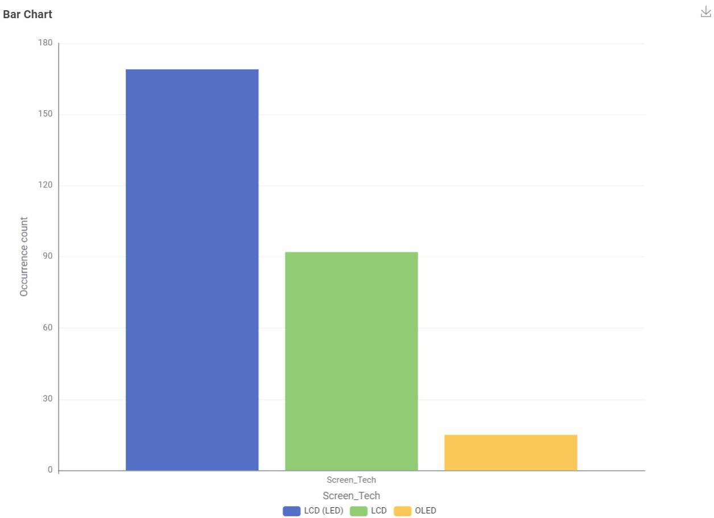
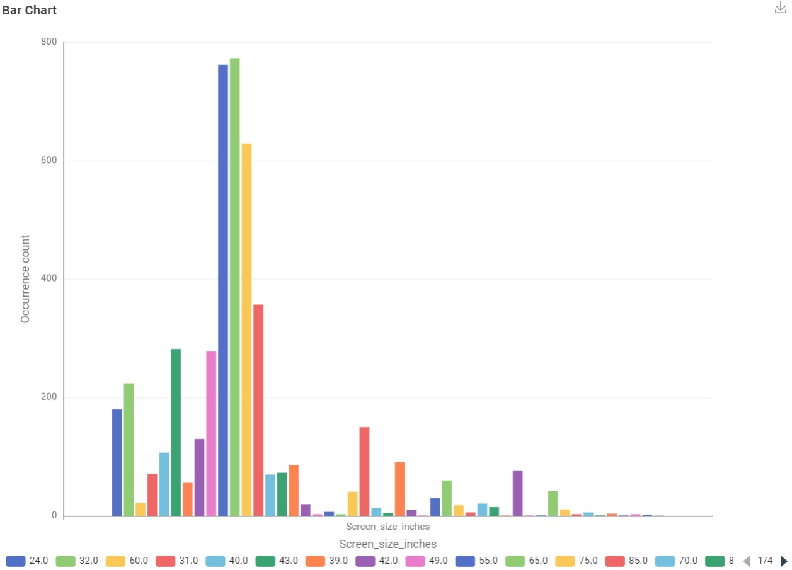
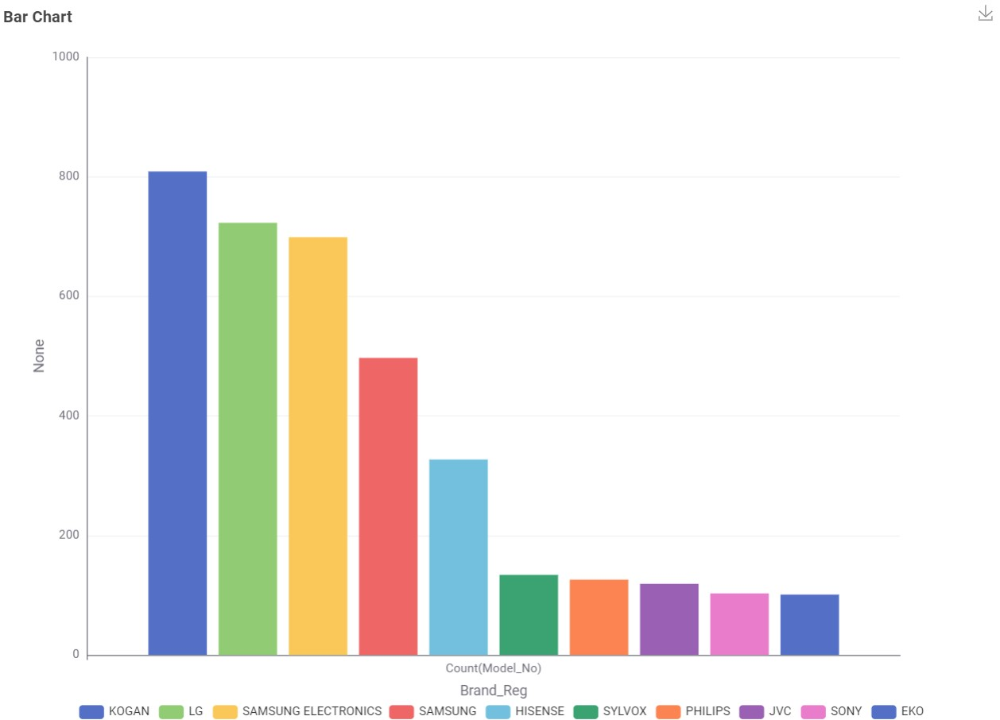
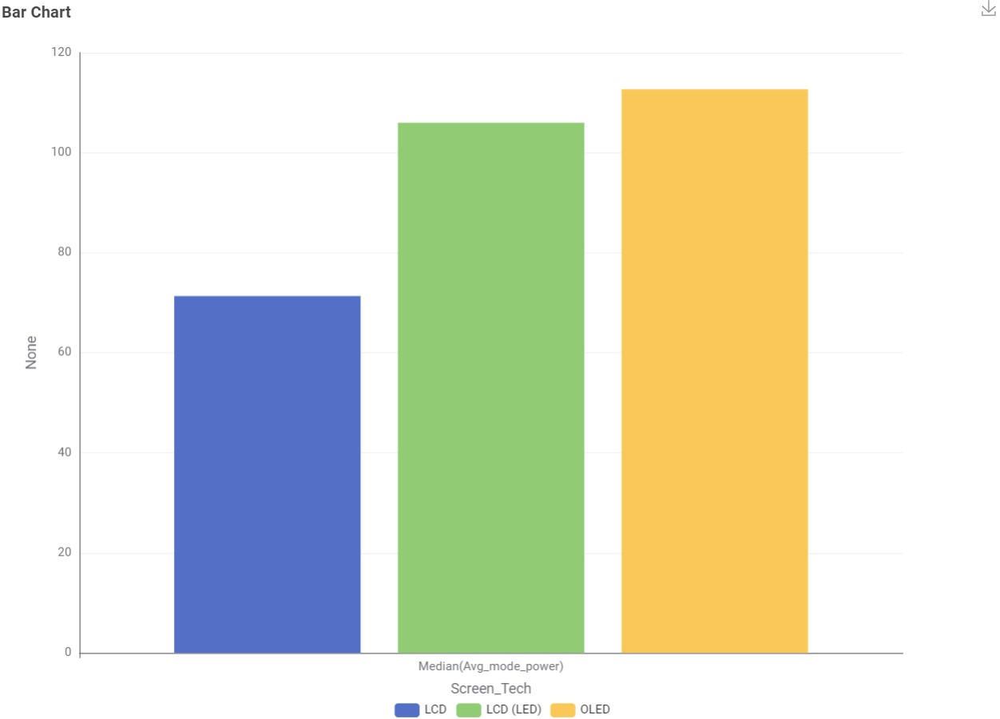
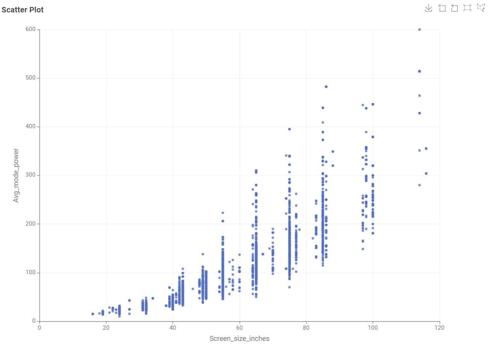
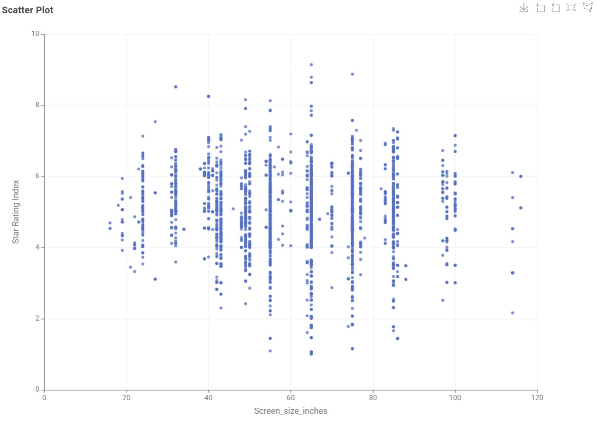
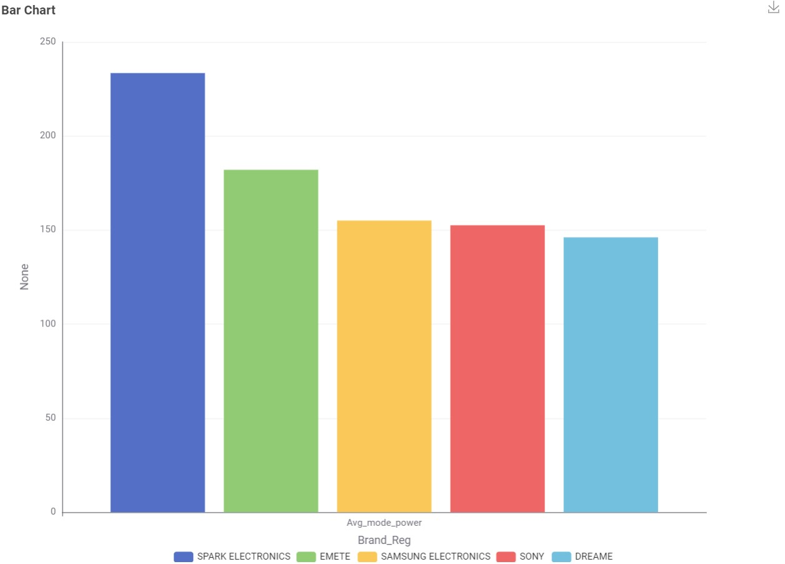

Exploration through Visualisations
This page includes charts that will help you to visualise the energy consumption of televisions that are currently available on the Australian market.
1. What type of TV screen technologies are currently available in Australia and which are the most frequent?
There are three types, which are LCD, LCD (LED), and OLED. The most frequent type is LCD (LED).

2. What screen sizes are available and which are most frequent?
The available screen sizes are in the range of 18.0 and 116.0 inches. The most frequent screen size is 65.0 inches.

3. Which brands have the largest number of models?
Kogan has the largest number of models.

4. Which type of screen technology consumes the least amount of power?
LCD consumes the least amount of power.

5. What is the relationship between screen size and power use?
The larger the screen size, the higher the power usage.

6. What is the relationship between star rating and screen size?
The smaller the screen size, the higher the star rating.

7. Are there differences in power consumption between brands?
Yes, there are some differences, but most of the brand have around the same power consumption.
The outlier SPARK ELECTRONICS is considerably higher than the rest.
